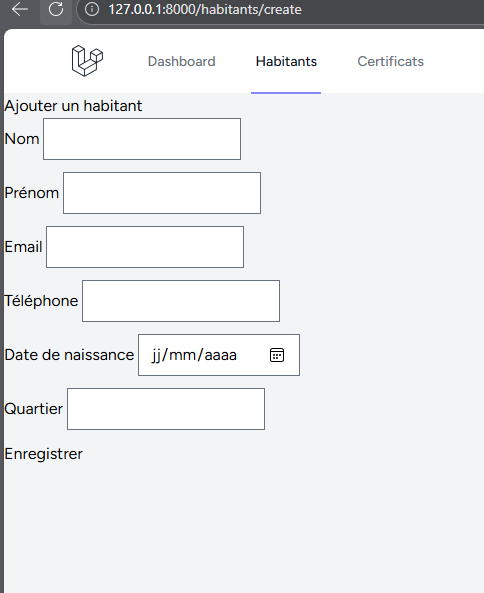

Gestion des certificats
Application web développée avec Laravel permettant à une communauté de gérer ses habitants et leurs certificats.
Présentation
Gestion des certificats est une application web conçue pour faciliter la gestion des habitants d'une communauté et des certificats qui leur sont associés. Le projet intègre également un système d'authentification et une gestion du paiement des certificats.
Fonctionnalités
Authentification
Gestion de l'accès des utilisateurs à l'application.
Gestion des habitants
Ajout, modification, suppression et consultation des habitants.
Recherche et filtrage
Recherche et filtrage des habitants enregistrés dans la communauté.
Gestion des certificats
Création, consultation, modification et suppression des certificats associés aux habitants.
Paiement
Gestion du paiement associé aux certificats avec suivi de leur statut.
Base de données
Stockage et gestion des informations avec MySQL et les modèles Eloquent de Laravel.
Captures d'écran


